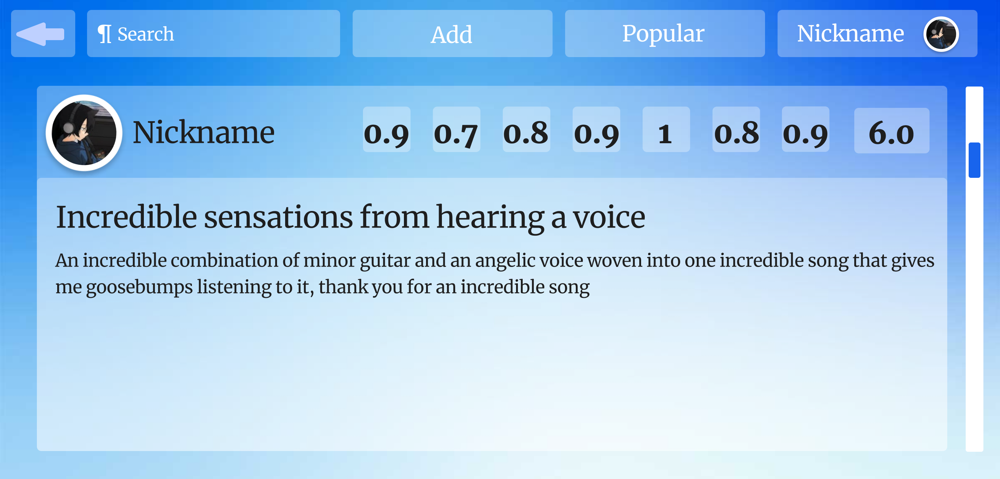

Information about CloudRate
CloudeRate (CloudeRating)
-
First, you need to register and log in.
In this menu, after entering your password and login, you can log in:
After that, you will be taken to the main page:
-
Secondly, find out if your song, album, video, or artist is available on the server.
On the top left, we can find all music by album, clips, or artist:
-
Thirdly, if your artist or music is not in the album clip, you can add it.
To add something new, click on the add button and choose what you want:
After selecting, for example, adding a clip, select the artist name, clip name, add the clip URL on YouTube, and additional information, and save:
-
Fourth, if the artist or track album clip is already available, you can read reviews, see ratings and you can also write a review and leave a rating.
When we go to the favorite music page, we see a picture of the artist's name, title, and average rating from all reviews:
If we scroll down to the bottom, we will see the reviews and ratings of each person:
